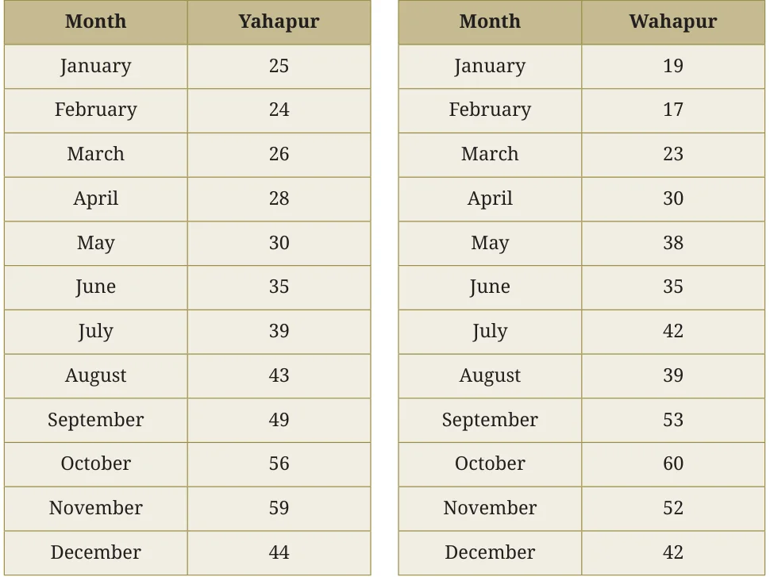
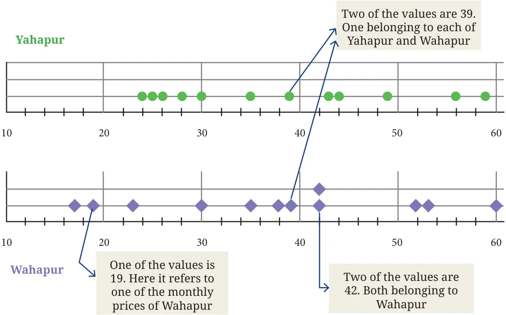

- 1.Shreyas is playing with a bat and a ball -
but not cricket. He counts the number of times he can bounce the ball on the bat before it falls to the ground. The data for 8 attempts is 6, 2, 9, 5, 4, 6, 3, 5. Calculate the average number of bounces of the ball that Shreyas is able to make with his bat.
- 2.Try the activity above on your own.
Collect data for 7 or more attempts and find the average.
- 3.Identify a flowering plant in your neighbourhood. Track the
number of flowers that bloom every day over a week during its flowering season. What is the average number of flowers that bloomed per day?
- 4.Two friends are training to run a 100 m race. Their running times
over the past week are given in seconds - Nikhil: 17, 18, 17, 16, 19, 17, 18; Sunil: 20, 18, 18, 17, 16, 16, 17. Who on average ran quicker?
- 5.The enrolment in a school during six consecutive years was as
follows: 1555, 1670, 1750, 2013, 2040, 2126. Find the mean enrolment in the school during this period.
Know Your Onions!
The table shows the monthly price of onions, in rupees per kilogram (kg), at two towns. Where are onions costlier, according to you?

Khushboo: ‘I think Wahapur is costlier because it has the highest price of ₹60.’ Nafisa: ‘I added the prices of all months in each location - Yahapur’s total is 458, whereas Wahapur’s total is 450.’ Vishal: ‘Wahapur is costlier since it has 3 numbers in the 50s’. Sampat: ‘I compared the prices in each month in both locations. Prices in Yahapur are higher for 6 months, prices in Wahapur are higher for 5 months, and the prices are the same for 1 month. So, I feel Yahapur is costlier.’ Jithin: ‘I noticed that the difference between the highest and lowest prices in Yahapur is \(59 - 24 = 35\), and in Wahapur it is \(60 - 17 =\) 43.’ Data can be described and compared by referring to its minimum value, maximum value, the average value, the sum total of all its values, and the difference between the maximum and minimum values. Can you think of any other ways to compare the data? To study data, we can visualise it in multiple ways. One way is shown below - it is called a dot plot. Dot plots show data points as dots on a line, helping us visualise variability and patterns in data. In the following figure, each dot represents the monthly price of onions.

The prices in Yahapur are in green and those in Wahapur are in purple. The horizontal line shows the prices from 10 to 60 (instead of starting from 0 as there are no values from \(0 - 10\) or above 60). The dots on the vertical line give the number of occurrences of a data value. Notice the equal spacing between the units along the horizontal as well as the vertical lines.
Does this visualisation capture all the data presented in the tables earlier?
Looking at it, can we tell the price of onions in Yahapur in the month of January? This method of presentation orders or sorts the data, but it loses the original (month-wise) sequence of the values. However, it allows us to group the data however we wish, just as Vishal did. For instance, there are 2 data values between \(11 - 20\) for Wahapur, while Yahapur has none. This representation makes it easier to observe the variation in the data - where and how the data is clustered or spread out. We can easily see that the prices in Wahapur are more spread out than those in Yahapur. It is also easy to spot the highest and lowest values. We can also use the average as one of the ways to compare the prices at these two places.
Find the average price of onions at Yahapur and Wahapur. A statement such as, “The price of onions is ₹35 per kilo”, may not trigger any further questions. But looking at variations in data, like the prices of onions over a year in Yahapur and Wahapur, can spark one’s curiosity. For example, one might be curious to know more about the two locations. You might wonder -
What are the Where are these factors that two locations? Are determine the Do the seasons they close to each price of onions? affect the price of other or far apart? onions?
How much do What other How do the price onion prices commodities fluctuations impact vary across might have farmers, consumers, shops in the similar and the industry? same area? patterns?
What else do you wonder about? Math Talk You can discuss questions that you are curious about with your peers, teachers, or family members to find answers.